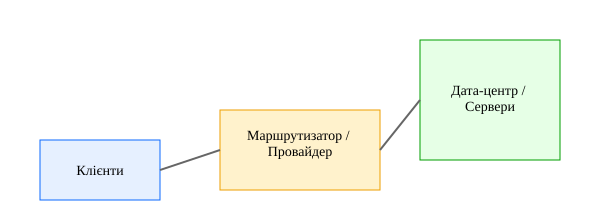

Компоненти мережі
- Канали зв'язку: оптоволокно, радіозв'язок, супутник, мобільні мережі.
- Мережеве обладнання: свічі, маршрутизатори (роутери), шлюзи, модеми, точки доступу Wi‑Fi.
- Сервери: веб, поштові, DNS, дата-центри, хмарні платформи.
- Клієнти: ПК, ноутбуки, смартфони, IoT-пристрої.
